Section 11 Graphing and data presentation
11.1 What makes bad data presentation?
fullSize
fullSize
fullSize
fullSize
fullSize
11.2 Reporting and presenting statistical tests
11.2.1 T-tests, ANOVA etc.
Reporting in written format > There was a signifiant difference between Group A and Group B on measure X, t(38) = 12.34, P<0.05
| Mean | SD | |
|---|---|---|
| Group 1 | 110 | 11.2 |
| Group 2 | 90 | 7.8 |
11.2.2 T-tests, ANOVA etc.
Visually, we want to convey: * The relative difference between factors/groups * Which differences are significant
fullSize
11.2.3 Correlation
Reporting in written format > There was a strong positive correlation Variable X and Variable Y, r=0.82, P<0.05
Visually, we want to convey: * Direction of relationship * Strength of relationship
fullSize
11.2.4 Regression Models
Reporting in written format 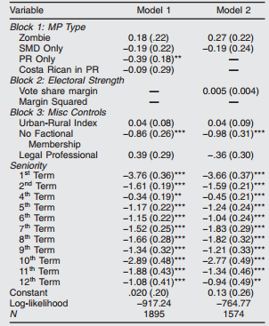
Visually, we want to convey: * Strength of contribution of each predictor * Confidence / significance of each predictor
fullSize
11.3 Looking for trends in data
Now we really do have essentially free and ubiquitous data. So the complimentary scarce factor is the ability to understand that data and extract value from it. The ability to take data—to be able to understand it, to process it, to extract value from it, to visualize it, to communicate it— that’s going to be a hugely important skill in the next decades. – Hal Varian
So, what are we looking for?
11.3.1 Comparisons or Deviations
Anchor Points: Highest, Lowest, Average
fullSize
Absolute differences 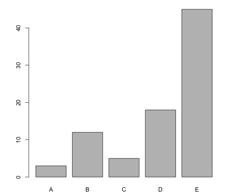
fullSize
Proportions 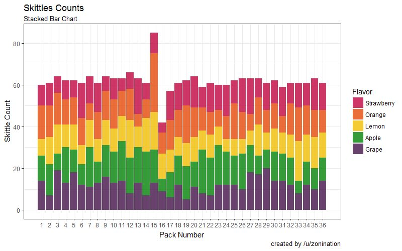
Distribution 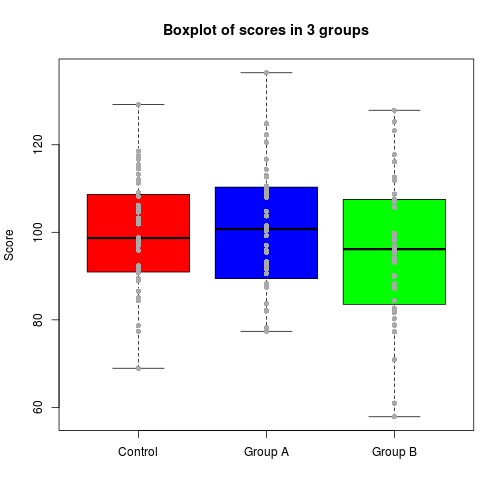
fullSize
11.3.2 Trends
Direction 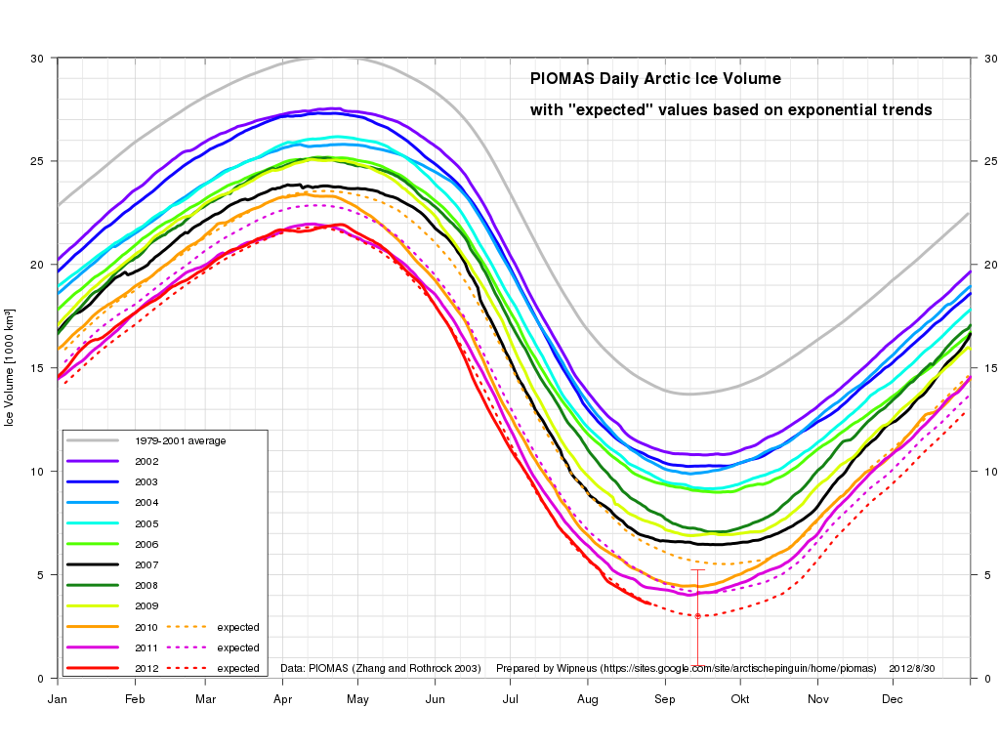
Peak 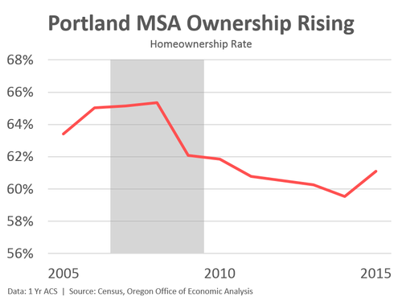
Rate of change 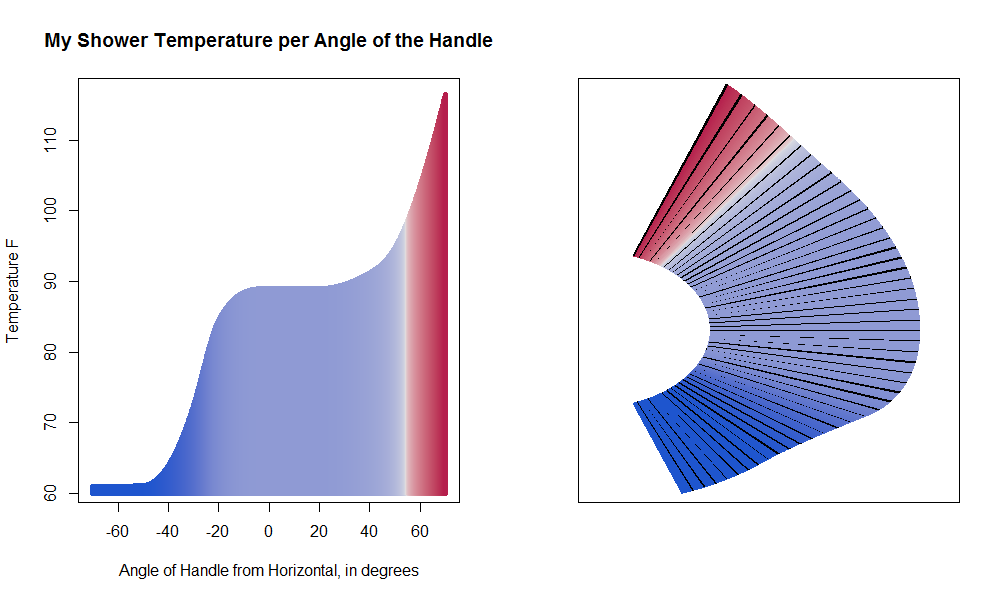
fullSize
Fluctuations 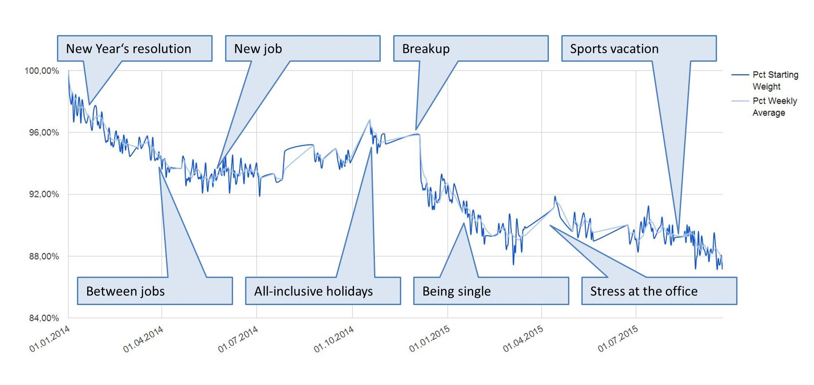
Signal from Noise 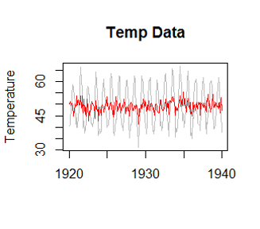
11.3.3 Patterns or Relationships
Outliers 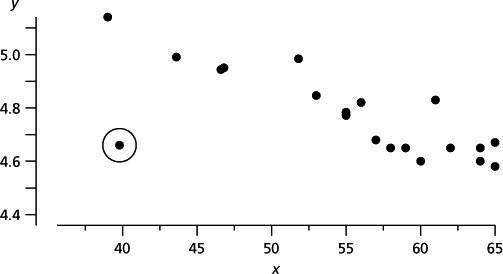
fullSize
fullSize
Correlation and Association
fullSize
fullSize
Clusters 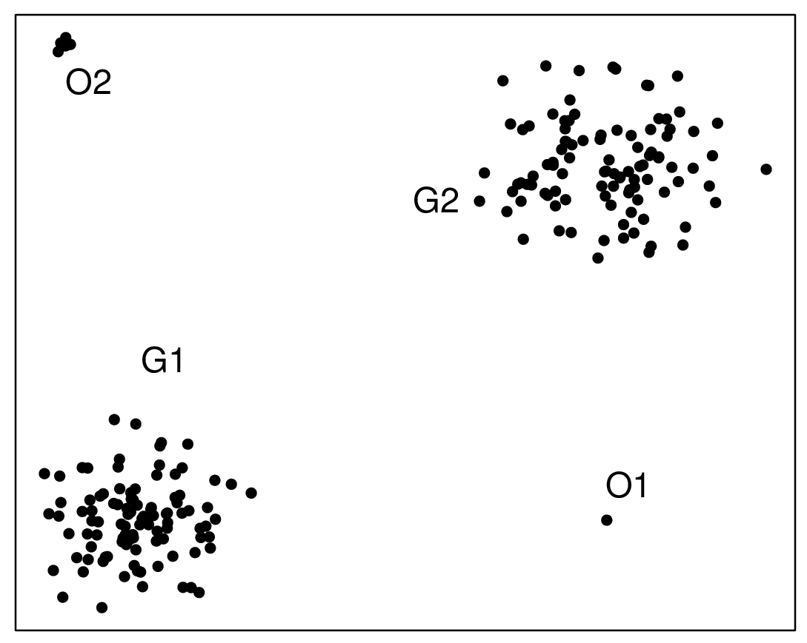
Overlap 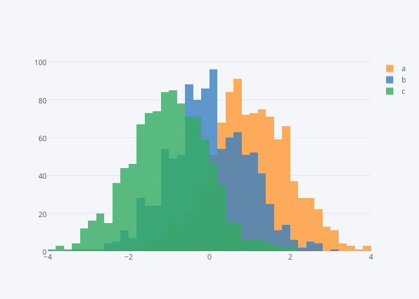
11.4 What are we trying to say?
Who/What? 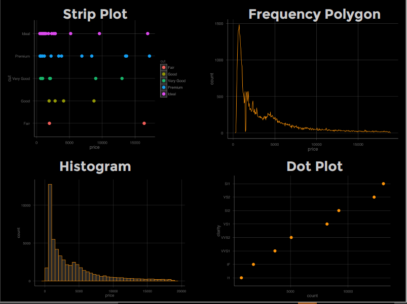
fullSize
How many? 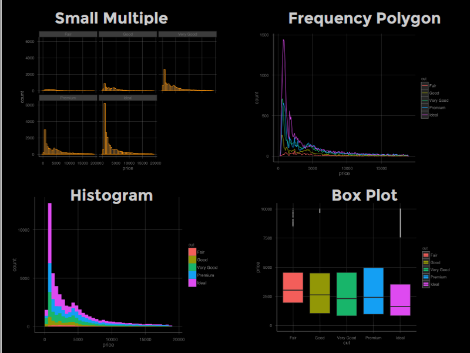
fullSize
Where? 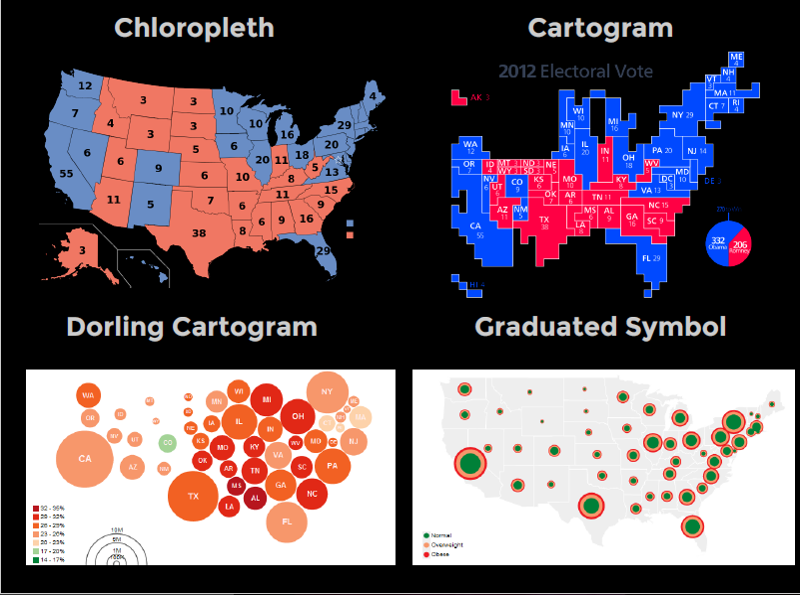
When? 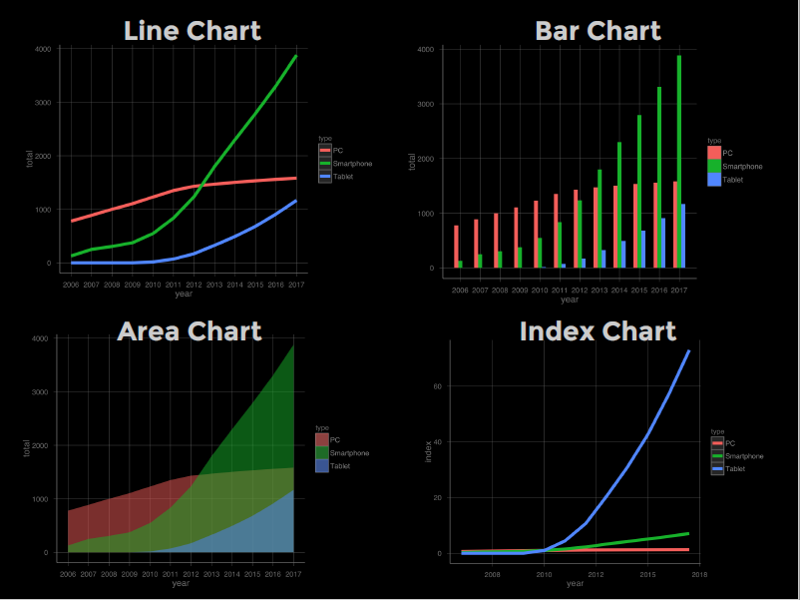
fullSize
fullSize
How? 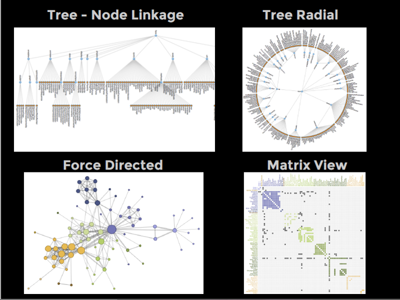
fullSize
11.5 The Gestalt principles of visual perception
- Proximity
- Similarity
- Enclosure
- Closure
- Continuity
- Connection
11.5.1 Proximity
fullSize
11.5.2 Similarity
fullSize
11.5.3 Enclosure
fullSize
11.5.4 Closure
fullSize
11.5.5 Continuity
fullSize
11.5.6 Connection
fullSize
11.5.7 Weber’s Law
We are only capable of perceiving differences in a stimulus that are beyond a certain proportion of the original value
fullSize
fullSize
fullSize
11.6 Processing data and visual information
fullSize
11.7 Limits of short-term memory
- It is temporary.
- A portion of it is dedicated to visual information.
- It has a limited storage capacity.
We can store only 3-9 chunks of visual information at a time in short-term memory. When it is full, for something new to be brought in, something that’s already there must either be moved into long-term memory or removed.
11.8 Designing for limits of STM
11.8.1 What is a chunk?
Individual numbers can be stored as discrete chunks
A well-designed graphic can represent a lot of information as a single chunk
11.9 Designing for rapid perception
11.9.1 How many 5s are in this list?
fullSize
fullSize
11.10 Preattentive visual cues
11.10.1 Colour
- Hue
- Intensity
11.10.2 Position
- X/Y Location
11.10.3 Form
- Orientation
- Line length
- Line width
- Size
- Shape
- Added marks
- Enclosure
fullSize
11.10.4 Hue
fullSize
11.10.5 Intensity
fullSize
11.10.6 Hue and Intensity
fullSize
11.11 Colour is perceived relative to its surroundings
fullSize
fullSize
- Be aware of context when using colour
- We want data to be fully legible
- We want data to appear the same when we need it to appear the same and different when we need it to appear different
11.11.1 Position
fullSize
- Most commonly used way of conveying data (e.g. scales)
- Easiest to interpret
11.11.2 Orientation
fullSize
11.11.3 Line Length
fullSize
11.11.4 Width
fullSize
11.11.5 Size
fullSize
11.11.6 Shape
fullSize
11.11.7 Added marks
fullSize
11.11.8 Enclosure
fullSize
11.12 Choosing the best visual cues for quantitive data
fullSizefullSize
11.13 Telling the story
The human stuff is the main stuff, and the data should enrich it
People who present data are good at who, what, where and when. Not so good at “Why?”